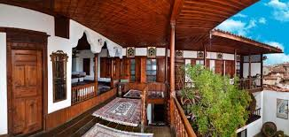
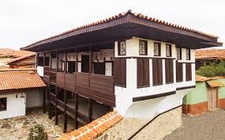

Kula evleri 18. yy Osmanlı İmparatorluğu'nun altındaki hemen her bölgede karşımıza çıkan ve TÜRK EVİ olarak tabir edilen ahşap evlerdir. Gerek plan, kuruluş ve gerekse ahşap, alçı ve kalem işi gibi zengin sistemleriyle bu dönem Osmanlı Sanatı’nın başarılı örnekleridir.


 "Manisa"ya dönmek için basın
"Manisa"ya dönmek için basın